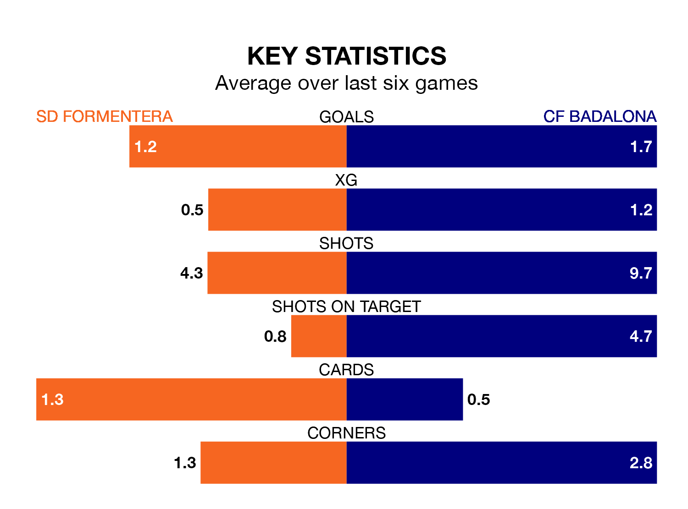

CF Badalona visit SD Formentera at the Estadio Municipal on early Sunday on the back of six consecutive wins in the Segunda División RFEF Group 3.
It means Badalona have picked up the maximum 18 points from their last six games, and they face a Formentera side who have also won their last two matches, and collected seven points from the last possible 18.
Badalona are top of the table after 25 games, of which they have won 14 and drawn nine, earning 51 points.
Formentera are eight places behind the away side in ninth, with nine wins and five draws putting them on 32 points.
With 33 goals in 25 games so far this season, Badalona are scoring more than average in the league with 1.3 goals per game. And they are conceding fewer than average, letting in 16 goals at a rate of 0.6 per game.
The hosts, meanwhile, are average scorers, with 1.2 goals per game. They have also conceded 1.2 goals per game.
In the last 10 years, Formentera and Badalona have played each other on seven occasions. They won two each, and they drew three times.
On average, Formentera scored 1.0 goal and Badalona 1.0 in those matches.
Their last meeting was on October 29, when Badalona won 1-0 at home.
Formentera's last match was on Sunday, a 1-0 win against Peña Deportiva, with Alberto Górriz Semper getting the goal for Formentera.
Badalona beat Espanyol B 1-0 last time out, on March 2, with Marc Vargas on the scoresheet.
Updated: 09:34 (UTC), 08/03/24